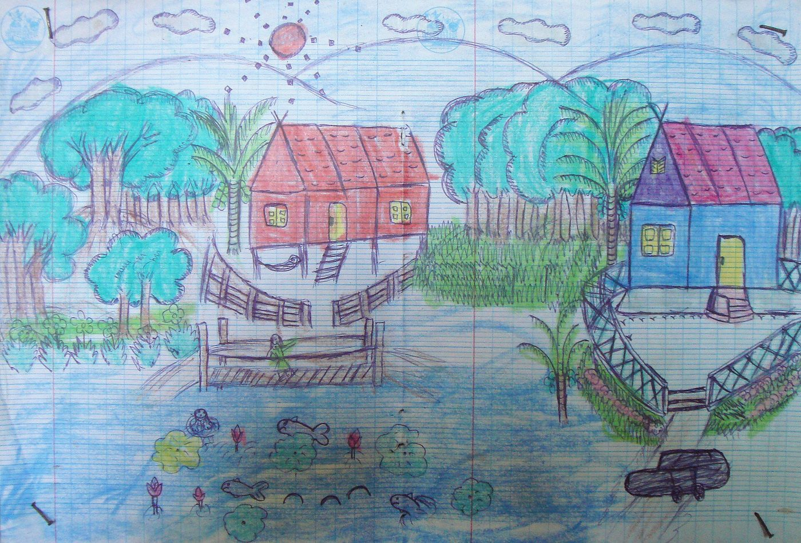
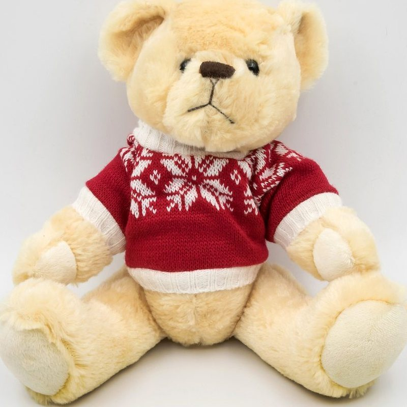
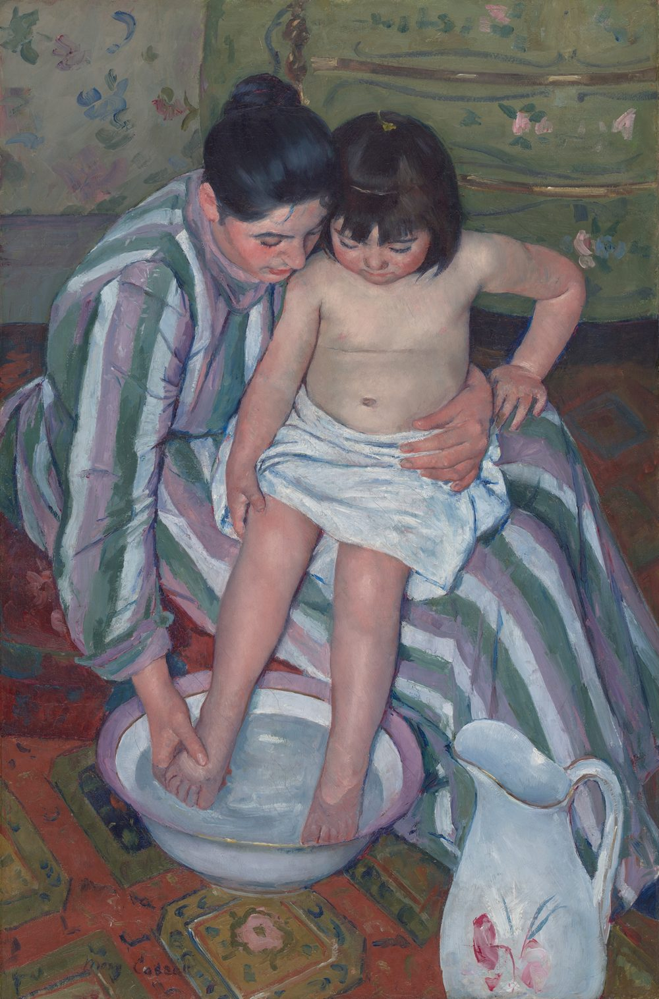

Врачи
Пять специалистов. Каждый принимает по записи и не торопится.
Приём длится 30 минут. Можно выбрать врача заранее или записаться к тому, у кого раньше свободное время: оно видно в записи на главной странице.
Елена Андреевна Орлова
Педиатр, главный врач
Стаж 15 лет. Принимает пн, ср, пт.
Наблюдает детей с рождения до 18 лет: плановые осмотры, температура, кашель, справки в сад и школу.
Дмитрий Игоревич Соколов
ЛОР
Стаж 11 лет. Принимает вт, чт, сб.
Насморк, который не проходит, боль в ухе, аденоиды, промывание носа.
Мария Олеговна Ким
Окулист
Стаж 9 лет. Принимает пн, вт, чт.
Проверка зрения у малышей и школьников, подбор очков, осмотр перед школой.
Анна Викторовна Лебедева
Педиатр, прививки
Стаж 7 лет. Принимает вт, чт, сб.
Прививки по календарю: сначала осмотр, потом прививка, всё в один визит.
Игорь Николаевич Фёдоров
Детский массаж
Стаж 13 лет. Принимает ежедневно, кроме воскресенья.
Массаж для малышей до года и для школьников, которым врач назначил курс.
Врачи и стаж вымышлены для демо-сайта. В рамки слева встанут фото врачей клиники.


